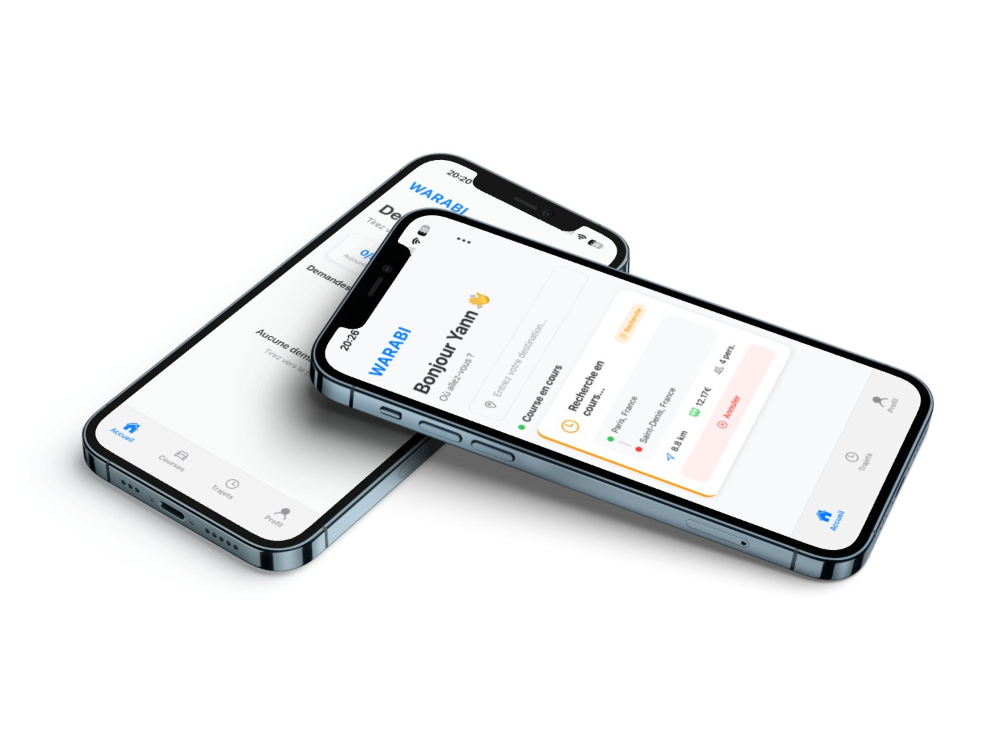
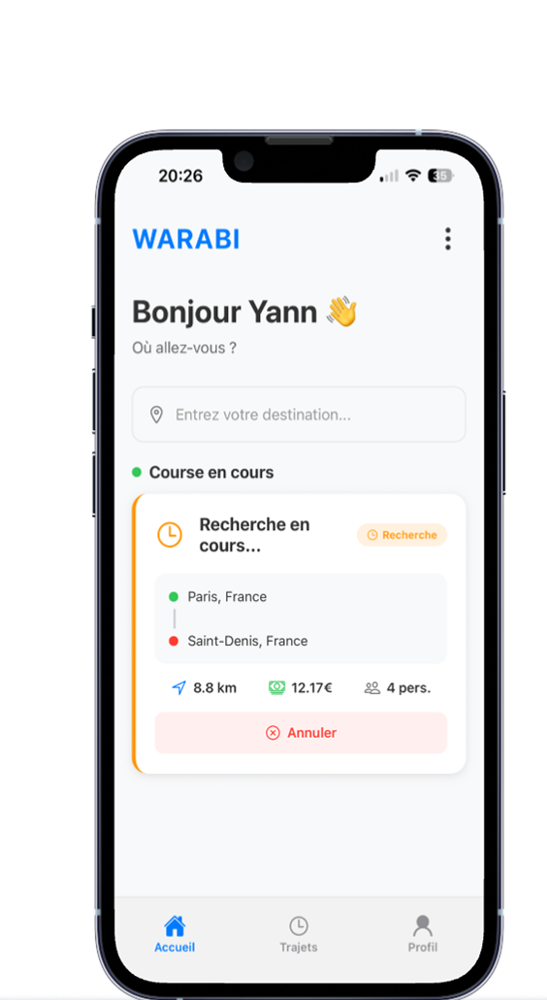
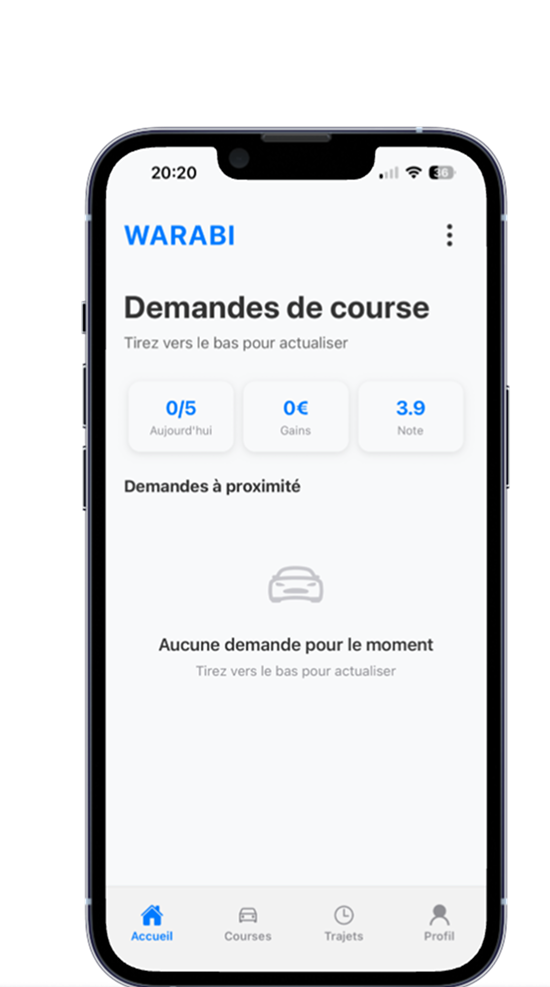

Pourquoi WARABI ?
Profils vérifiés, permis contrôlés et notation après chaque trajet.
Le prix est calculé automatiquement selon la distance et le temps de trajet.
Conducteur trouvé en secondes. Suivi GPS en temps réel.
Une communauté qui grandit chaque jour. Rejoignez les premiers utilisateurs WARABI !
Entrez votre destination, choisissez votre conducteur et suivez votre trajet en temps réel.

Activez le mode conducteur quand vous le souhaitez. Gérez vos courses et vos gains.

Sur WARABI, les femmes ont le contrôle total. Avant de confirmer une course, elles peuvent choisir uniquement des conductrices — ou laisser ouvert à tous. Parce que se déplacer doit rester une liberté, pas une prise de risque.
Téléchargez WARABI gratuitement
et effectuez votre premier trajet dès aujourd'hui.
👤 Client
🚗 Conducteur
💳 Paiement
🛡️ Sécurité
Newsletter
Aucun spam. Désinscription en un clic.